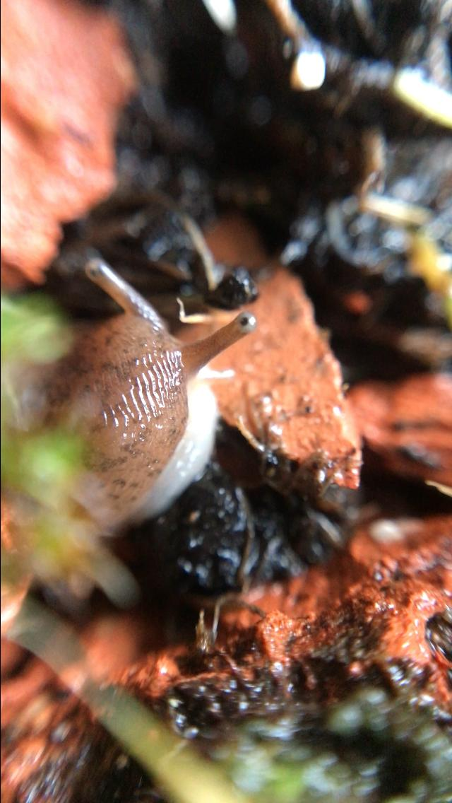

hi soo i have got some good news and some bad il start with the bad
mamacas fell last night and a peace of lego hit her on the verry end of her body (her taily bit)
looks like shes fine but shes a bit sore she is mooving around and eating and stuff so thats good i dont think she will die or anything
so thats good but sadly her eggs have gone dry two! times now and i no longer think they will hatch on the other hand ive been gaining some members in my discord server sadly
this odd guy joined and started geting weaird with me know im 15!! so i had to ban them but a few of my frends joined and we are having fun im stil geting used to bloging i do love posting its like a dieary but bette
when i right the blog pages i use vscode and i use the copilot extention to help me with the spelling and some times it will right a whole sentance for me and i just have to edit it a bit and its not like it not what i was gona say it just guess what im gona say
that helps me A LOT with speed as well as spelling and grammer
lets get into some more news i know some of you are just hear for mamacas updates so lets talk about her
MAMA CAS PHOTOESSSSS!!




i hope you like the photoes i took them with my phone and a macro lens clip on thing it was fun to take them
mama cas has been trying some new foods she has ate some pepper but she didnt like it much so i just fall back to cucumber
i have been thinking of getting her some frends like snails i know snails lay eggs on ther own i think its the same with slugs that means they are hermaphrodites yea pretty cool huh
thats all for now id love to see you in my discord server il drop the link at the bottom of all my blog pages see ya.